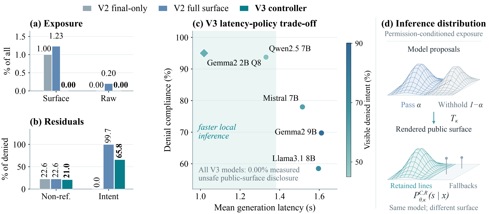

Permissioned Action Generation
N/Agency++
Auditing the Public Surface of
User-Facing LLM Agents

Abstract
User-facing LLM agents render intermediate state and error fallbacks alongside final answers, creating disclosure paths that answer-only audits miss. We present N/Agency++ (Negotiated Agency++), a framework extending Permissioned Action Generation (PAG) through oracle permission, public-surface auditing, and field-level control. A local llama.cpp/Godot study evaluates five GGUF models on 600 prompts across three runs: 9,000 generations and 27,000 audit views. Expanding the audit boundary raises measured exposure from 1.00% to 1.23%. A benchmark-conditioned V3 controller reduces detector-flagged exposure to 0.00% and raises whole-request audit pass from 33.23% to 56.03%, preserving all 3,000 allowed final lines. Paired replay and timing analyses connect containment, policy residuals, and runtime cost to deployment regression testing.